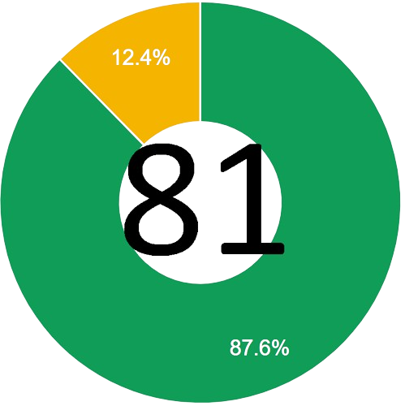

Научно-фантастический симулятор колонии под управлением ИИ-рассказчика
В RimWorld троим пассажирам потерпевшего крушение космического лайнера приходится строить свою колонию в пограничном мире на краю изученного космоса. Источниками вдохновения к этой игре послужили космический вестерн Firefly, глубокая проработка Dwarf Fortress и эпические Dune и Warhammer 40 000.
RimWorld — это генератор историй
RimWorld создаёт трагические, запутанные и пафосные истории о заключённых в тюрьму пиратах, отчаянных колонистах, голоде и выживании. Игра контролирует «случайные» события, с которыми вы столкнётесь в её мире. Каждая гроза, пиратский рейд и коммивояжёр — это очередная страница из вашей истории, написанной ИИ-рассказчиком. Можно выбирать между тремя рассказчиками: Ренди Случай творит беспредел, Классическая Кассандра любит накалять страсти, а Тихоня Фиби предпочитает не напрягаться.
Ваши колонисты не являются профессиональными поселенцами
Им посчастливилось выжить в крушении пассажирского лайнера, который вышел из строя на орбите. Среди них могут быть аристократы, бухгалтеры и домохозяйки. Увеличивать количество колонистов можно за счёт приёма беженцев, захвата пленных в бою, перевербовки их на свою сторону и выкупа у работорговцев. Так что ваша команда колонистов всегда будет разношёрстной.
Прошлое каждого из колонистов будет влиять на их способности
Аристократ будет силён в навыках общения (для вербовки заключённых и ведении торговых переговоров), но откажется выполнять физическую работу. Простак с фермы знает, как выращивать еду, но не сможет заниматься исследовательской деятельностью. Занудный ученый силён в исследованиях, но будет абсолютно неспособен выполнять социальные задачи. Созданный методами генетической инженерии убийца кроме как убивать ничего не умеет, но делает это очень хорошо.
Колонисты развивают и разрушают отношения
У каждого из них есть мнение о других, которое определяет, станут ли они любовниками, сыграют свадьбу, начнут друг другу изменять или устроят поножовщину. Например, пара ваших лучших колонистов может быть счастлива в браке до тех пор, пока жена не влюбится в горячего хирурга, спасшего её от огнестрельного ранения.
В игре создаётся целая планета — от полюса до экватора
Вы выбираете, куда приземлять свои спасательные модули: в холодной северной тундре, в выжженной пустыне, в умеренном лесу или в душных экваториальных джунглях. В разных регионах разные животные, растения, болезни, температура, осадки, минеральные ресурсы и рельеф. Борьба за выживание в кишащих болезнями, удушливых джунглях очень отличается от такой же борьбы в выжженных пустынных землях или в замороженной тундре с двухмесячным периодом вегетации.
Путешествуйте по планете
Вы можете свободно перемещаться по планете. Создайте караван из людей, животных и заключённых. Спасайте похищенных бывших союзников из пиратских форпостов, посещайте мирные переговоры, торгуйте с другими фракциями, атакуйте вражеские колонии и выполняйте другие задания. Можете даже собрать всю колонию и переехать на новое место. А чтобы путешествовать ещё быстрее, можно использовать транспортные средства с ракетным двигателем.
Приручайте и дрессируйте животных
Симпатичные питомцы поднимут настроение грустным колонистам. Сельскохозяйственных животных можно использовать для работы, доить и стричь. А хищных зверей можно натравливать на врагов. В игре много животных: кошки, лабрадоры, медведи гризли, верблюды, пумы, шиншиллы, куры и экзотические инопланетные формы жизни.
Люди в RimWorld постоянно изучают ситуацию и окружение, чтобы знать, как чувствовать себя в данный момент
Они реагируют на голод и усталость, на смерти у них на глазах, на неуважительно похороненные трупы, на ранения, на темноту, на нахождение в стеснённых условиях, на сон под открытым небом или в одной комнате с посторонними и на многие другие ситуации. Когда колонист слишком долго находится в состоянии стресса, у него может случиться нервный срыв.
Ранения, инфекции, протезирования и хронические заболевания отслеживаются по каждой части тела и влияют на способности героев
Повреждения глаз осложняют возможность стрелять или делать хирургические операции. Ранения в ноги замедляют людей. Руки, мозг, рот, сердце, печень, почки, желудок, ноги, пальцы на руках и ногах и другие части тела могут получить ранения, заболеть, либо колонист вообще может остаться без них. Всё это приводит к логичным внутриигровым эффектам. У каждой особи своё строение тела. Отнимите у оленя ногу — и он сможет бегать на трёх оставшихся! Отпилите носорогу рог — и он станет не таким опасным.
Восстанавливать части тела можно с помощью протезирования — от примитивного до сверхъестественного
Деревянная нога даст возможность колонисту Джо ходить после нападения носорога, но уже не так шустро. В следующем году можно купить у торговца дорогую бионическую ногу, и Джо станет супербегуном. Можно даже извлекать, продавать, покупать и пересаживать внутренние органы.

Платформы:WINDOWS
Разработчик:Ludeon Studios
Издатель:Ludeon Studios
Дата выхода:09/06/20